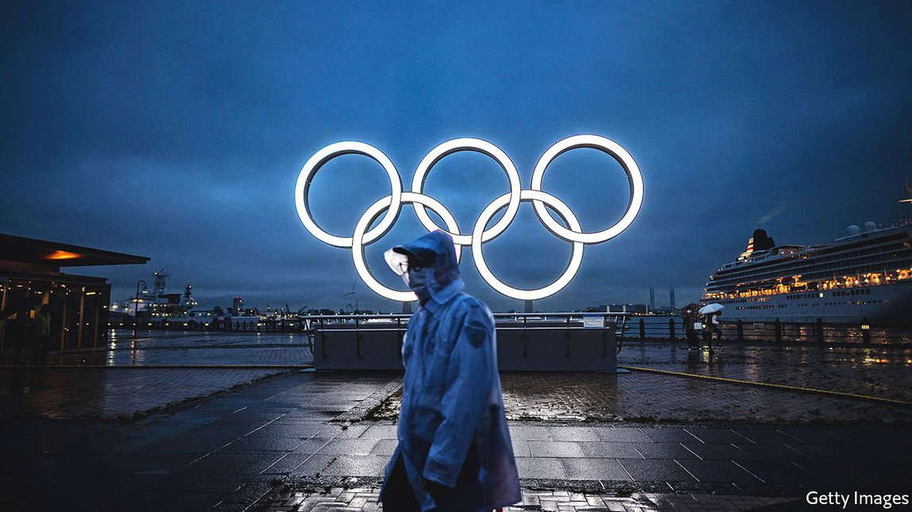

2021-07-21T14:37:27+00:00
Rings on the ropes
悬着的五环
懸着的五環
The 2020 Olympics will be memorable, but not in the way Japan hoped
东京奥运的难忘将非日本所愿
東京奧運的難忘將非日本所願
Even if disaster is averted, a sense of national renewal will remain elusive
即使不至于以灾难收场，也难以带来民族复兴之感
即使不至於以災難收場，也難以帶來民族復興之感
CLOUDS GATHERED over Komazawa stadium in Tokyo as the Olympic torch arrived on July 9th. Because of the pandemic, the traditional public relay was replaced by a small ceremony behind the stadium’s closed doors. Protesters outside held signs that read “Protect lives not the Olympics” and “Extinguish the Olympic torch”. As Kyogoku Noriko, a civil servant, put it, “Now is not the time for a festival.” More enthusiastic onlookers lined a nearby footbridge, hoping to catch a glimpse of the flame through the stadium’s rafters. For Honma Taka, an office worker, the torch offered “a bit of light within the darkness”.
七月九日，奥运火炬抵达东京驹泽奥林匹克公园的体育场，天空乌云密布。受疫情影响，奥运火炬穿街过巷传递的传统改为一个小型仪式，在该体育场内闭门举行。场外抗议者举着写有“保护生命而非奥运会”和“熄灭奥运火炬”的牌子示威。公务员京谷纪子说，“现在不是举行庆典的时候”。更多支持奥运的市民兴致勃勃地站在附近的天桥上围观，希望透过体育场的梁架看一眼奥运圣火。公司职员本间贵宽（音译）说，火炬带来了“黑暗中的一点光明”。
七月九日，奧運火炬抵達東京駒澤奧林匹克公園的體育場，天空烏雲密布。受疫情影響，奧運火炬穿街過巷傳遞的傳統改為一個小型儀式，在該體育場內閉門舉行。場外抗議者舉着寫有“保護生命而非奧運會”和“熄滅奧運火炬”的牌子示威。公務員京谷紀子說，“現在不是舉行慶典的時候”。更多支持奧運的市民興緻勃勃地站在附近的天橋上圍觀，希望透過體育場的梁架看一眼奧運聖火。公司職員本間貴寬（音譯）說，火炬帶來了“黑暗中的一點光明”。
Mr Honma longingly recalled a brighter day in the same park eight years earlier, when he joined thousands of others to celebrate as Tokyo won the right to host the games. Abe Shinzo, Japan’s prime minister at the time, said he was happier than he had been when he became prime minister. Mr Abe saw the Olympics as a chance to lend credence to his bullish catchphrase: “Japan is back”. He hoped the games would help the country snap out of its gloom after decades of economic stagnation, demographic decline and devastating natural disasters. The games, says Taniguchi Tomohiko, a special adviser to Mr Abe, were seen as a source of “a commodity that was in scarce supply: hope for the future”.
本间贵宽神往地回想起八年前更明媚的一天，当时也是在驹泽奥林匹克公园里，他和成千上万人一起庆祝东京赢得了2020年奥运会的主办权。时任日本首相安倍晋三说自己比当选首相时还高兴。安倍视奥运会为一个契机来印证他那句豪迈的口号：“日本回来了”。他希望奥运会有助日本走出近几十年来经济停滞、人口衰老缩减，以及毁灭性自然灾害频发的阴霾。安倍的特别顾问谷口智彦表示，奥运会被视为“‘未来希望’这一稀缺商品”的源泉。
本間貴寬神往地回想起八年前更明媚的一天，當時也是在駒澤奧林匹克公園裡，他和成千上萬人一起慶祝東京贏得了2020年奧運會的主辦權。時任日本首相安倍晉三說自己比當選首相時還高興。安倍視奧運會為一個契機來印證他那句豪邁的口號：“日本回來了”。他希望奧運會有助日本走出近幾十年來經濟停滯、人口衰老縮減，以及毀滅性自然災害頻發的陰霾。安倍的特別顧問谷口智彥表示，奧運會被視為“‘未來希望’這一稀缺商品”的源泉。
The grand designs had a powerful precedent in the previous Tokyo Olympics, in 1964. Just two decades after defeat in the second world war, those games came to encapsulate both Japan’s rise from the ashes and its re-entry into the global community. Tokyo, which had been reduced to cinders by American firebombing, was smartened up. New roads and rail lines, including the first shinkansen, or bullet train, were built. “There was a feeling in the 1960s that everyday life was becoming richer: today is better than yesterday, and tomorrow will be better than today—and the Olympics became a symbol of this,” says Togo Kazuhiko, a former ambassador who was a student at the time. The excitement left a lasting impression on a generation, including Mr Abe, who invoked his childhood memories of 1964 when Tokyo won the bid for this year’s games.
这些宏伟设想有一个强有力的先例——1964年的东京奥运会。这届赛事展示了日本在二战战败仅20年后便从灰烬中崛起，并再次融入国际社会。之前被美国轰炸成废墟的东京被整饬一新，新建了公路和铁路线，包括第一条新干线也就是高速铁路。“上世纪60年代有种感觉，就是每日的生活变得越来越丰盛：今天比昨天好，明天会比今天好，举办奥运会成了这种感觉的象征。”当年还是学生的日本前任驻外大使东乡和彦说。这种兴奋感给一代人留下了不可磨灭的印象，包括安倍本人，他在日本赢得2020奥运会主办权时就提到了自己对1964年的童年回忆。
這些宏偉設想有一個強有力的先例——1964年的東京奧運會。這屆賽事展示了日本在二戰戰敗僅20年後便從灰燼中崛起，並再次融入國際社會。之前被美國轟炸成廢墟的東京被整飭一新，新建了公路和鐵路線，包括第一條新幹線也就是高速鐵路。“上世紀60年代有種感覺，就是每日的生活變得越來越豐盛：今天比昨天好，明天會比今天好，舉辦奧運會成了這種感覺的象徵。”當年還是學生的日本前任駐外大使東鄉和彥說。這種興奮感給一代人留下了不可磨滅的印象，包括安倍本人，他在日本贏得2020奧運會主辦權時就提到了自己對1964年的童年回憶。
If not for the pandemic, excitement may well have materialised again. The current Tokyo Olympics has had its share of controversies, from an over-budget stadium to rank sexism from the (now departed) head of the organising committee. Nor would a sporting event alone be enough to resolve Japan’s problems. But the games were shaping up to be a source of pride. Tens of thousands of young Japanese had signed up to volunteer. Japan planned to welcome 40m foreigners in 2020, when the games were originally scheduled. Tourists would have found an impeccably clean, safe, well-run metropolis. Akita Hiroyuki, a commentator for Nikkei, a Japanese daily, reckons that the Olympics could have been a “white ship” that catalysed the country to “wake up and open up”. (The Americans who forced Japan to open to the world in the 19th century arrived in “Black Ships”.)
如果不是因为疫情，日本很可能已经再次热血沸腾起来。这届东京奥运会争议不断，从体育场馆预算超支，到组委会主席（现已离职）发表性别歧视言论。仅仅一场体育赛事也不足以解决日本的问题。但它原本毕竟还是在朝着“光荣的源头”迈进。数以万计的日本年轻人报名做志愿者。日本原本估计在去年也就是这届奥运会原定举办的年份迎来四千万外国人，游客们所见的东京会是一个无比洁净、安全、管理完善的大都市。日本报纸《日经新闻》的评论员秋田浩之认为，奥运会本可成为催化这个国家“觉醒与开放”的一艘“白船”。(19世纪迫使日本向世界开放的美国人是乘坐“黑船”前来的。)
如果不是因為疫情，日本很可能已經再次熱血沸騰起來。這屆東京奧運會爭議不斷，從體育場館預算超支，到組委會主席（現已離職）發表性別歧視言論。僅僅一場體育賽事也不足以解決日本的問題。但它原本畢竟還是在朝着“光榮的源頭”邁進。數以萬計的日本年輕人報名做志願者。日本原本估計在去年也就是這屆奧運會原定舉辦的年份迎來四千萬外國人，遊客們所見的東京會是一個無比潔凈、安全、管理完善的大都市。日本報紙《日經新聞》的評論員秋田浩之認為，奧運會本可成為催化這個國家“覺醒與開放”的一艘“白船”。(19世紀迫使日本向世界開放的美國人是乘坐“黑船”前來的。)
Instead, the games will be held without fans, foreign or domestic, in a city under a state of emergency. Ito Yuko, one of the fans gathered outside Komazawa stadium, lamented that the mood is “200% different” from 1964, when she first fell in love with the Olympics. Rather than coming together for the games, Japan has been riven by them. Recent polls show that as many as 80% of Japanese did not want them to go ahead this year.
而现在，奥运会将在没有外国和国内观众的情况下，在一个处于紧急状态的城市举行。聚集在驹泽体育场外的奥运迷之一伊藤裕子（音译）叹息说，现在的气氛比起最初让她爱上奥运会的1964年“差了百分之两百”。日本非但没有为奥运会齐心协力起来，反而弄得四分五裂。最近的民意调查显示，多达80%的日本人不希望今年继续举办这场赛事。
而現在，奧運會將在沒有外國和國內觀眾的情況下，在一個處於緊急狀態的城市舉行。聚集在駒澤體育場外的奧運迷之一伊藤裕子（音譯）嘆息說，現在的氣氛比起最初讓她愛上奧運會的1964年“差了百分之兩百”。日本非但沒有為奧運會齊心協力起來，反而弄得四分五裂。最近的民意調查顯示，多達80%的日本人不希望今年繼續舉辦這場賽事。
The sense that national leaders are pulling an unwilling population into a disaster has led to comparisons not with the previous Tokyo Olympics, but with the war that preceded them. Even Emperor Naruhito, who almost never speaks about politically sensitive matters, has made his concerns about pressing on with the games known.
这让人感觉国家领导人正在把不情愿的民众拽入一场灾难。人们由此联想到的不是1964年的东京奥运会，而是它之前那场战争。就连几乎从不谈论政治敏感问题的德仁天皇也表达了对继续举办奥运会的担忧。
這讓人感覺國家領導人正在把不情願的民眾拽入一場災難。人們由此聯想到的不是1964年的東京奧運會，而是它之前那場戰爭。就連幾乎從不談論政治敏感問題的德仁天皇也表達了對繼續舉辦奧運會的擔憂。
Opposition to the Olympics stems only in part from fears of covid-19. Japan has managed the pandemic well by global standards, with just 15,000 deaths; Tokyo has seen just eight covid-19 deaths so far this month. But many Japanese feel that the success has been thanks to ordinary people who behaved responsibly and made sacrifices in their personal lives, whereas the government is stubbornly persisting with a risky undertaking. “It’s not just the health crisis, but the democratic crisis—it’s the lack of accountability,” says Nakano Koichi of Sophia University.
对疫情的恐惧只是人们反对这次奥运会的其中一个原因。以全球标准来看，日本对疫情的控制相当不错，总死亡人数仅为15,000，本月迄今东京仅有八例死亡。但许多日本人认为，这归功于老百姓在个人生活中负责任地行事和做出牺牲，而政府却一意孤行坚持冒险办赛。“这不仅是健康危机，还是民主危机，显示了问责的缺失。”上智大学的中野晃一说。
對疫情的恐懼只是人們反對這次奧運會的其中一個原因。以全球標準來看，日本對疫情的控制相當不錯，總死亡人數僅為15,000，本月迄今東京僅有八例死亡。但許多日本人認為，這歸功於老百姓在個人生活中負責任地行事和做出犧牲，而政府卻一意孤行堅持冒險辦賽。“這不僅是健康危機，還是民主危機，顯示了問責的缺失。”上智大學的中野晃一說。
Many fume that the interests of sponsors, TV networks and the International Olympic Committee (IOC) seem to be more important than those of the Japanese people. That the games have moved forward despite public opinion shows they are “not for the people”, but for “the people to whom the money flows”, says Miyakawa Taku, a software engineer who joined the protest outside Komazawa stadium.
赞助商、电视网和国际奥委会的利益似乎比日本国民的利益更重要，这让很多人深感愤怒。政府无视民意执意举办奥运，表明奥运会“不是为民众”而办，而是为了“金钱利益所向的人群”，在驹泽体育场外参加抗议活动的软件工程师宫川拓说。
贊助商、電視網和國際奧委會的利益似乎比日本國民的利益更重要，這讓很多人深感憤怒。政府無視民意執意舉辦奧運，表明奧運會“不是為民眾”而辦，而是為了“金錢利益所向的人群”，在駒澤體育場外參加抗議活動的軟件工程師宮川拓說。
Things could go badly wrong. A covid-19 outbreak in the Olympic Village could prevent events from being held and leave competitions with asterisks in the history books. A careless member of the press or an official delegation could sneak off and seed a larger outbreak among the Japanese public. Athletes from the developing world could bring a more infectious strain of the virus home, turning the games into a global superspreader event. Such a fiasco would reinforce a sense of Japan’s decline and leave the public more wary of engagement with the outside world.
事态可能会严重失控。奥运村内若爆发疫情，可能导致赛事无法进行，在奥运史册上留下一个个星号注脚。某个心大的媒体或官方代表团成员也许会偷偷溜出奥运村，在日本民众中引发更大规模的疫情。发展中国家的运动员可能把更具传染性的病毒株带回本国，令这次奥运会变成一场全球性超级传播事件。这样糟糕的结局将强化日本走向衰败的感觉，也会令民众对与外界交流持更保守的态度。
事態可能會嚴重失控。奧運村內若爆發疫情，可能導致賽事無法進行，在奧運史冊上留下一個個星號註腳。某個心大的媒體或官方代表團成員也許會偷偷溜出奧運村，在日本民眾中引發更大規模的疫情。發展中國家的運動員可能把更具傳染性的病毒株帶回本國，令這次奧運會變成一場全球性超級傳播事件。這樣糟糕的結局將強化日本走向衰敗的感覺，也會令民眾對與外界交流持更保守的態度。
Japan might also manage to keep the virus mostly under control and the sport on schedule. Executing the games in such difficult circumstances could instead serve as a reminder of Japan’s ability to overcome adversity. Either way, the legacy of these Olympics will be contested. “If this was a picture, we could say that the frame itself has become rotten,” says Sakaue Yasuhiro, a sports historian at Hitotsubashi University in Tokyo. “The picture might turn out to be beautiful, but it is still surrounded by this rotten frame.” ■
日本也可能大体控制住疫情，赛事如期举行。在如此艰难的情况下办完奥运会继而也有可能提醒世人，日本有能力克服逆境。无论怎样，这届奥运会的遗产将是有争议的。“如果这是一幅画，我们可以说画框本身已经烂掉了，”东京一桥大学的体育历史学家坂上康博说，“画最终也许是美的，但还是被这朽烂的画框围绕。”
日本也可能大體控制住疫情，賽事如期舉行。在如此艱難的情況下辦完奧運會繼而也有可能提醒世人，日本有能力克服逆境。無論怎樣，這屆奧運會的遺產將是有爭議的。“如果這是一幅畫，我們可以說畫框本身已經爛掉了，”東京一橋大學的體育歷史學家坂上康博說，“畫最終也許是美的，但還是被這朽爛的畫框圍繞。”